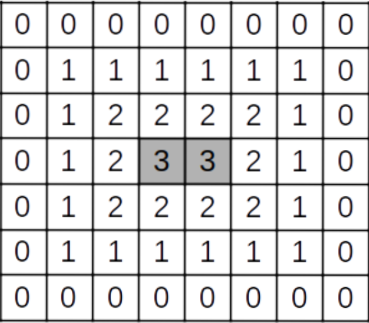

Прямоугольник состоит из $$$N$$$x$$$M$$$ квадратных клеток. Назовём клетки на границе прямоугольника крайними. Расстоянием от какой-либо клетки до края назовём количеством перемещений, которое нужно сделать из данной клетки в соседнюю по стороне клетку, чтобы добраться от данной клетки до крайней клетки. Клетки с максимальным расстоянием до края, будем называть центральными. При это клетка может быть одновременно и крайней, и центральной.
На рисунке изображён прямоугольник для $$$N = 7$$$ и $$$M = 8$$$, в каждой клетке которого записано расстояние от этой клетки до края. У этого прямоугольника две центральных клетки.

По данным $$$N$$$ и $$$M$$$ определите количество центральных клеток в прямоугольнике.
Вводится два целых положительных числа записанных в разных строках, не превосходящих $$$10^9$$$ — размеры прямоугольника.
Вывести одно число — количество центральных клеток в данном прямоугольнике.
78
2